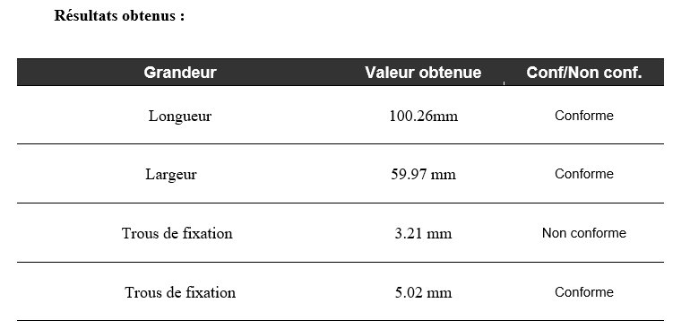
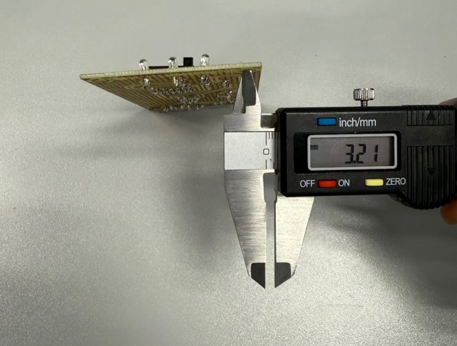
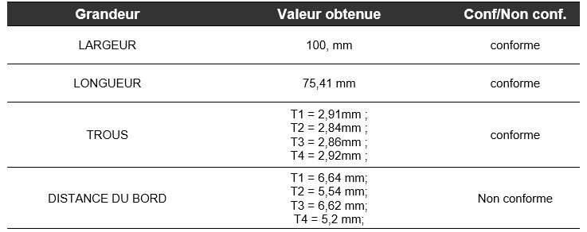
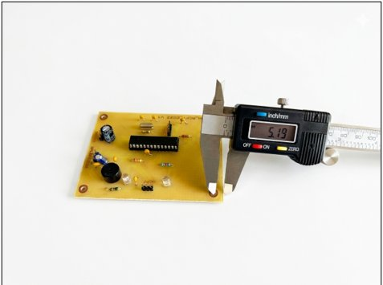

J'identifie et je corrige
les non-conformités d'un prototype
Concevoir et vérifier sont indissociables : lorsqu'un essai révèle un écart entre la mesure et l'exigence, il faut analyser l'origine de la non-conformité, corriger le prototype et re-vérifier jusqu'à obtenir la conformité. Cette compétence couvre l'ensemble de cette boucle diagnostic–correction–validation, appliquée sur les trois projets du BUT 1.
BUT 1 · SAÉ S1
SLR — Système Sonore et Lumineux Rafale
J'ai rédigé l'essai ESS_CLIGNOTE, qui vérifie la période et le temps actif du clignotement de la LED jaune par rapport à l'exigence EXIG_CLIGNOTE. À l'oscilloscope, j'ai mesuré une période de 1,8 s pour une exigence de 1,9 s ±20 % (plage acceptable de 1,52 s à 2,28 s), puis un temps actif de 108 ms pour une exigence de 0,1 s ±20 % (plage de 80 ms à 120 ms). Les deux mesures se situent dans la fenêtre de tolérance : l'essai est conforme.
Au cours de cette campagne d'essai, j'ai identifié deux anomalies physiques sur la carte testée : une soudure qui s'était écartée de sa piste pour créer un contact involontaire avec le plan de masse, et le circuit NE555 monté à l'envers. J'ai corrigé la première en refaisant fondre l'étain pour repositionner la liaison, puis remplacé le composant mal orienté avant de reprendre les mesures, écartant ainsi tout risque d'imprécision sur les résultats validés.

Figure 1 : Mesure de la période du clignotement — 1,8 s (conforme à EXIG_CLIGNOTE)

Figure 2 : Mesure du temps actif du clignotement — 108 ms (conforme)
BUT 1 · SAÉ S1
TDB — Thermostat de Bébé
J'ai co-rédigé, avec Mathis Raclet, Léandre Cyuzuzo et Baptiste Masiero, l'essai ESS_DIMENSIONS, qui vérifie au pied à coulisse les dimensions de la carte et de ses trous de fixation par rapport à l'exigence EXIG_DIMENSIONS. La longueur (100,26 mm) et la largeur (59,97 mm) de la carte sont conformes à la tolérance de ±0,5 mm, de même que la distance entre le centre des trous et le bord de la carte (5,02 mm).
Le diamètre des trous de fixation, en revanche, a été mesuré à 3,21 mm pour une exigence de 4 mm ±0,2 mm : un écart qui rend l'essai non conforme. J'ai identifié que le foret utilisé pour le perçage était le plus grand diamètre disponible dans notre outillage et ne permettait pas d'atteindre la cote demandée — une limite matérielle de production plutôt qu'une erreur de conception.
Pour la production en série, la solution retenue est de standardiser l'outillage de perçage avant son lancement afin de garantir cette fois la conformité totale. Le produit a été validé avec réserve, celle-ci étant levée dès cet ajustement de l'outillage.

Figure 3 : Résultats ESS_DIMENSIONS — diamètre des trous (3,21 mm) non conforme

Figure 4 : Mesure du diamètre d'un trou de fixation — 3,21 mm
BUT 1 · SAÉ S2
KAH — Kart à Hélice
Le projet KAH a réuni deux binômes en parallèle — l'un sur l'émetteur, l'autre sur le récepteur — rassemblés dans un même DDV. De mon côté, j'ai vérifié les dimensions de la carte émettrice (ESS_EMTT_MÉCANIQUE) : largeur, longueur et trous de fixation, tous conformes aux tolérances du cahier des charges. Sur le récepteur, mes coéquipiers Darren De Oliveira-Da Silva et Kélyann Crime ont mené l'essai symétrique ESS_RCPT_DIMENSIONS, qui vérifie les mêmes grandeurs sur la carte réceptrice par rapport à l'exigence EXIG_RCPT_DIMENSIONS.
La largeur (100,13 mm) et la longueur (75,41 mm) de la carte réceptrice sont conformes, de même que le diamètre des quatre trous de fixation (entre 2,84 et 2,92 mm pour une tolérance de 2,5 à 3,5 mm). En revanche, la distance entre le centre des trous et le bord de la carte dépasse la tolérance de 5,5 à 6,5 mm sur trois des quatre trous — jusqu'à 6,64 mm —, rendant l'essai non conforme. Un manque de précision lors du perçage a été identifié comme cause de cet écart.
La solution retenue pour les prochaines réalisations consiste à vérifier le diamètre réel de l'embout de perçage utilisé et à contrôler les trous immédiatement après perçage, avant l'assemblage final, afin de garantir le respect des tolérances dès la fabrication.

Figure 5 : Résultats ESS_RCPT_DIMENSIONS — distance au bord non conforme

Figure 6 : Mesure du bord d'un trou au bord de la carte — 5,19 mm